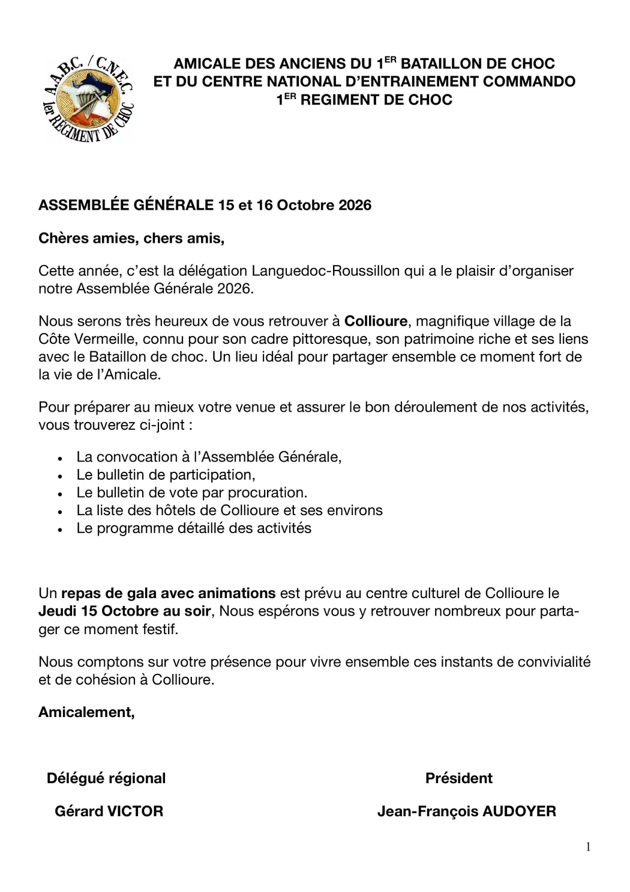
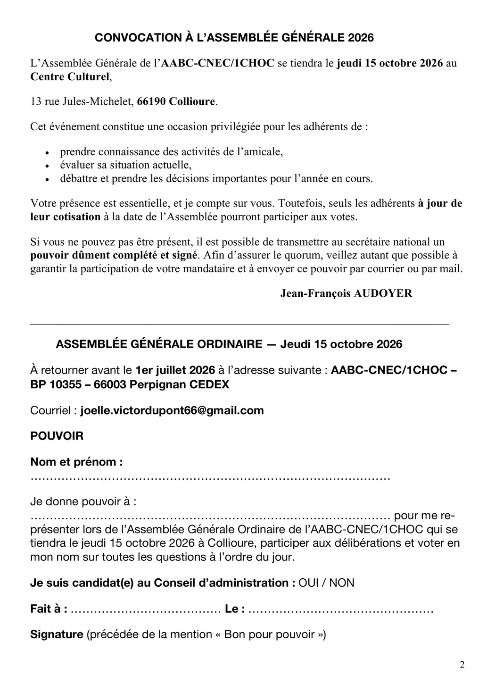
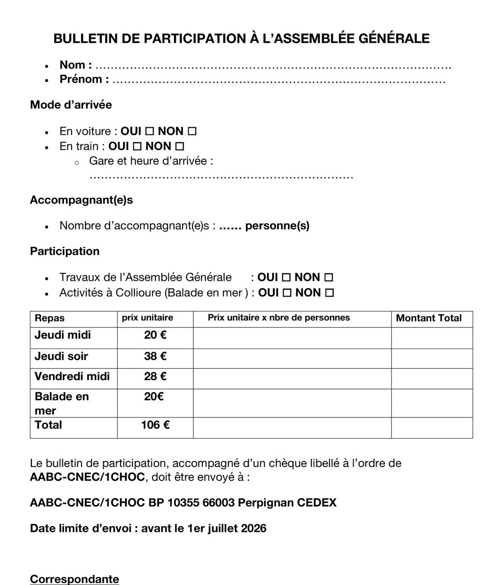
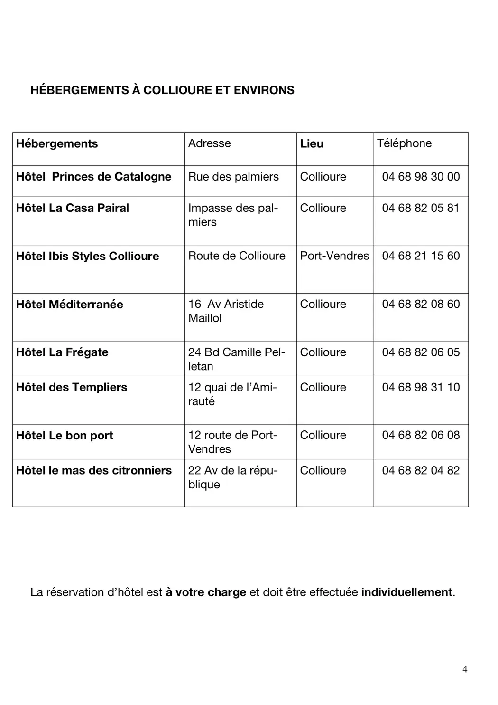
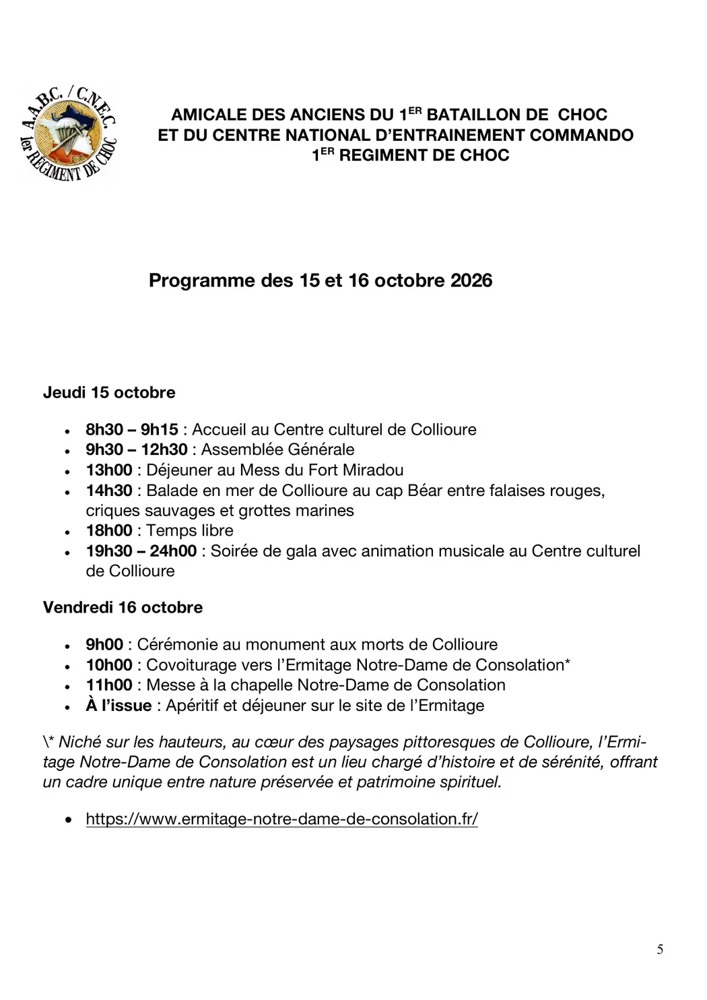

Assemblée générale 2026
Collioure, jeudi 15 et vendredi 16 octobre 2026. Centre culturel, 13 rue Jules-Michelet, 66190 Collioure.
Chères amies, chers amis,
Cette année, c'est la délégation Languedoc-Roussillon qui a le plaisir d'organiser notre assemblée générale. Nous serons très heureux de vous retrouver à Collioure, village de la Côte Vermeille connu pour son cadre pittoresque, son patrimoine et ses liens avec le Bataillon de choc — un lieu idéal pour partager ce moment fort de la vie de l'amicale.
Un repas de gala avec animations est prévu au centre culturel le jeudi 15 octobre au soir. Nous espérons vous y retrouver nombreux.
Gérard Victor, délégué régional — Jean-François Audoyer, président
Participer aux votes
Seuls les adhérents à jour de leur cotisation à la date de l'assemblée pourront prendre part aux votes. En cas d'empêchement, transmettez au secrétaire national un pouvoir dûment complété et signé : pour assurer le quorum, veillez à la présence de votre mandataire et envoyez ce pouvoir par courrier ou par courriel.
Programme
Jeudi 15 octobre
- 8 h 30 – 9 h 15 — accueil au Centre culturel de Collioure
- 9 h 30 – 12 h 30 — assemblée générale
- 13 h 00 — déjeuner au mess du fort Miradou
- 14 h 30 — balade en mer de Collioure au cap Béar, entre falaises rouges, criques sauvages et grottes marines
- 18 h 00 — temps libre
- 19 h 30 – minuit — soirée de gala avec animation musicale au Centre culturel
Vendredi 16 octobre
- 9 h 00 — cérémonie au monument aux morts de Collioure
- 10 h 00 — covoiturage vers l'Ermitage Notre-Dame de Consolation
- 11 h 00 — messe à la chapelle Notre-Dame de Consolation
- à l'issue — apéritif et déjeuner sur le site de l'Ermitage
Niché sur les hauteurs de Collioure, l'Ermitage Notre-Dame de Consolation est un lieu chargé d'histoire et de sérénité, entre nature préservée et patrimoine spirituel.
Avant le 1er juillet 2026
Bulletin de participation accompagné d'un chèque à l'ordre de AABC-CNEC/1CHOC :
AABC-CNEC/1CHOC — BP 10355
66003 Perpignan Cedex
joelle.victordupont66@gmail.com
Cinq documents
Convocation · pouvoir · bulletin de participation · liste des hôtels · programme détaillé. Tous reproduits plus bas.
À votre charge
La réservation d'hôtel est individuelle. Huit adresses à Collioure et Port-Vendres sont proposées dans le document joint.
Les repas et activités
Prix unitaires| Prestation | Prix unitaire |
|---|---|
| Jeudi midi — déjeuner au mess du fort Miradou | 20,00 € |
| Jeudi soir — soirée de gala | 38,00 € |
| Vendredi midi — déjeuner à l'Ermitage | 28,00 € |
| Balade en mer — cap Béar | 20,00 € |
| Formule complète | 106,00 € |
Hébergements à Collioure et environs
Réservation individuelle| Hôtel | Adresse | Commune | Téléphone |
|---|---|---|---|
| Princes de Catalogne | Rue des Palmiers | Collioure | 04 68 98 30 00 |
| La Casa Pairal | Impasse des Palmiers | Collioure | 04 68 82 05 81 |
| Ibis Styles Collioure | Route de Collioure | Port-Vendres | 04 68 21 15 60 |
| Méditerranée | 16 av. Aristide-Maillol | Collioure | 04 68 82 08 60 |
| La Frégate | 24 bd Camille-Pelletan | Collioure | 04 68 82 06 05 |
| Des Templiers | 12 quai de l'Amirauté | Collioure | 04 68 98 31 10 |
| Le Bon Port | 12 route de Port-Vendres | Collioure | 04 68 82 06 08 |
| Le Mas des Citronniers | 22 av. de la République | Collioure | 04 68 82 04 82 |
Le dossier de convocation
5 pages · cliquez pour agrandir



